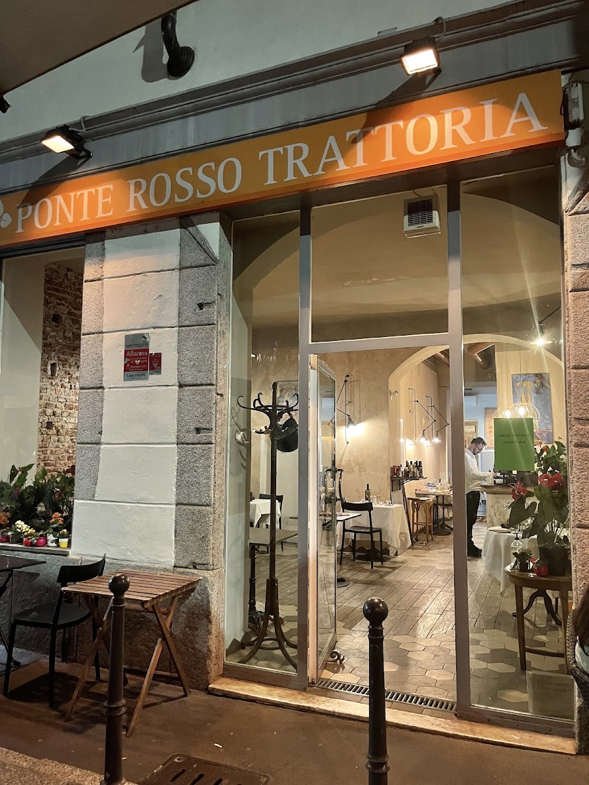

Trattoria · Naviglio Grande · Ripa di Porta Ticinese 23, Milano
Ponte Rosso
La cucina della memoria, in riva al Naviglio.
Trecento ricette tra la cucina di casa e i piatti dimenticati, la spesa fatta ogni mattina e la stessa mano in cucina da più di vent'anni. Il ponte è quello lì fuori.
8,7 su 10 su TheFork · sul Naviglio Grande
La cucina della memoria
È così che la chiamiamo noi, da sempre.
Il Naviglio è sempre stato un luogo di lavoro e di incontro, e la trattoria è nata così: da un gruppo di amici, con la stessa direzione in cucina da più di vent'anni e una giovane coppia in sala. Le ricette vengono dalla storia della cucina italiana — quella che si faceva in casa e per strada, semplice e popolare — e dalla riedizione, più colta, di piatti dimenticati.
Privilegiamo i piatti di Milano, Roma e Napoli: un asse che unisce un paese intero. E come in una famiglia, la spesa e la preparazione sono quotidiane: si seguono le stagioni, si comprano cose buone, per lo più locali, e si cucinano il giorno stesso.
- ~300ricette in repertorio
- 20+anni della stessa cucina
- 3città in un menù: Milano, Roma, Napoli
La cantina
Piccoli produttori, prezzi da trattoria.
Orari e dove
In riva al Naviglio Grande, davanti al ponte.
| Lunedì – Sabato | 12:30 – 15:00 · 19:30 – 23:30 |
|---|---|
| Domenica | solo pranzo · 12:30 – 15:30 |
20143 Milano — Navigli
M2 Porta Genova, dieci minuti a piedi lungo il Naviglio
La domenica si lavora solo a pranzo: meglio prenotare.